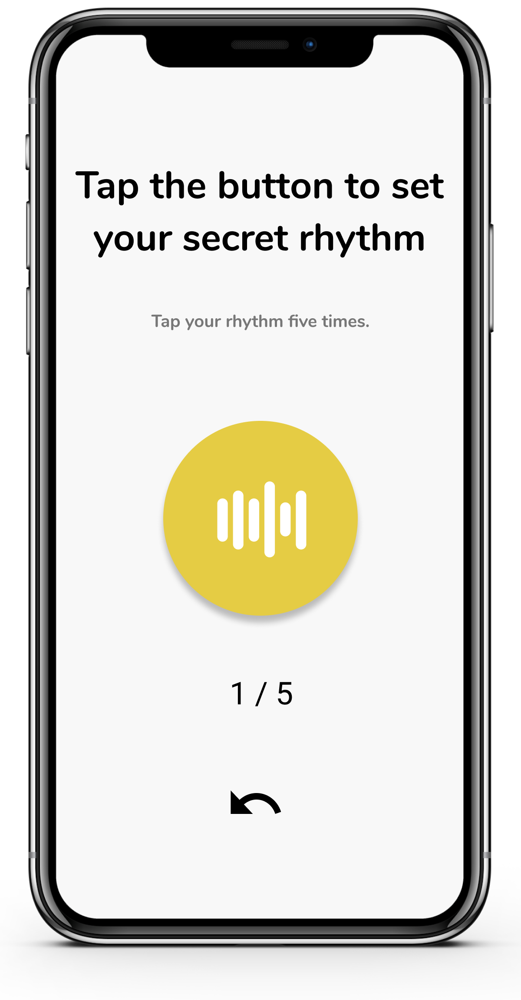
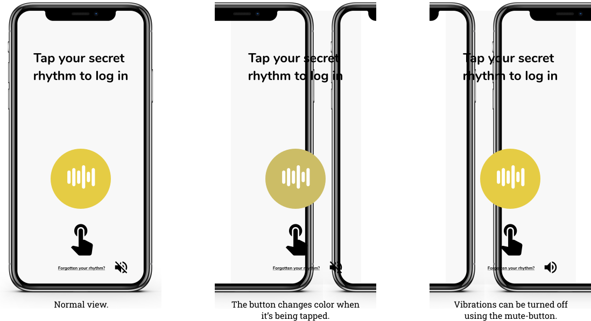

PassBeat Tool
Purpose of PassBeat
The purpose of PassBeat is to test the users' ability to remember rhythm-based authenitcation methods as compared to text-based passwords. Many studies have suggested that rhythms, melodies and music are relatively easy for humans to rememeber, and some studies also suggest that text-based passwords are relatively difficult to remember. Furthermore, the ability to remember the latter decreases as its security increases.
The app will serve as a tool when conducting field studies. The idea is that the app should serve this purpose automatically once downloaded on a user's smartphone, logging any data that is deemed interesting in regard to the research questions.
How to use PassBeat
Setting a password
 500 ? 500: true);"/>Upon entering the setup-view, the user it prompted to tap a rhythm of their choice that will serve as authentication in the app. The user taps the same rhythm five times, and if all five inputs are similar enough an average will be calculated and saved. The icon at the bottom allows the user to redo the last input.
Logging in
In the login-view the user can tap their rhythm, if properly set up, to enter the app. The button is animated to give slight visual feedback when tapped and haptic feedback will be given unless it has been muted using the icon in the bottom right corner. The level of feedback the user gets is supposed to represent what is generally available.
By pressing the "Forgotten your rhythm?"-text, the user can reset their rhythm if they have forgotten it.
Flowchart of the Login-Process

Technical Details

When a user enters their PassBeat authentication code the length of each press and the pauses between them are save measured in milliseconds and saved in a vector. This means that every other value in the resulting vector represents the length of a press, and every other value represents the length of a pause.
TODO: add more details
- password setup -> reference to TapSongs paper about averaging 5 rhythms
- evaluating rhythm password -> reasons for weighted error
Evaluation of the App
- Nielen's 10 Usability Heuristics
- strengths
- Weaknesses
Early Development
- formative research + strategy deck
- prototype decks